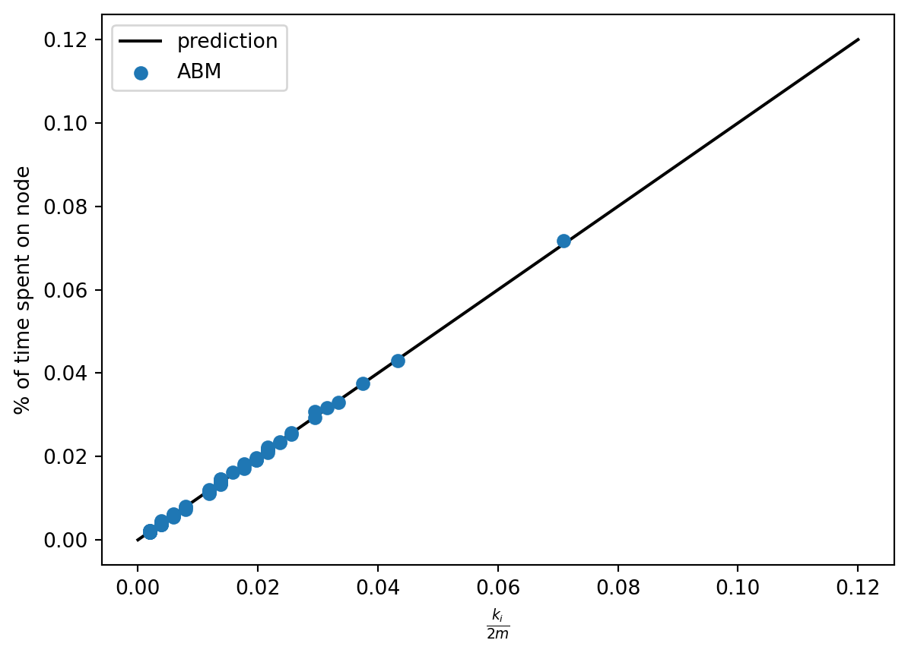

from mesa import Model, Agent # core mesa classes
from mesa.space import NetworkGrid
from mesa.time import BaseScheduler
from mesa.datacollection import DataCollector
import networkx as nx # for the grid
import numpy as np # computations
from matplotlib import pyplot as plt # visualizing output6 Agent-Based Modeling on Networks
Many of the problems that interest us in networks relate to agents making actions or decisions on network structures. While in some cases we can develop relatively complete mathematical descriptions of systems like these, in other cases we need to perform computational simulations and experiments. In this set of notes, we’ll focus on basic techniques for agent-based modeling (ABM) in Python.
In agent-based modeling, we construct a model by defining a set of agents and the rules by which those agents interact. There are many good software packages for agent-based modeling, perhaps the most famous of which is NetLogo. In this class, we’ll use one of several agent-based modeling frameworks developed for Python, called mesa. Mesa includes a number of useful tools for constructing, analyzing, and visualizing agent-based models. You can install Mesa using
For even more comparisons, see this page.
pip install mesaat the command line or by searching for and installing it in the Environments tab of Anaconda Navigator. Once you’ve installed Mesa, you are ready to use its tools.
6.1 Components of an Agent-Based Model
Let’s start with some vocabulary. A Mesa model has several components:
- An agent is a representation of the individuals who make decisions and perform actions. Agents have a
step()method that describes their behavior. - The grid is a representation of relationships between individuals. The grid can be, say, a 2d rectangle, in which case we could imagine it representing space. In this class, we’ll of course use a network grid, in which we can use a network to specify relationships.
- The scheduler determines the order in which agents act. In a synchronous model, all agents act simultaneously. In an asychronous model, agents act one at a time, in either a fixed or a random order. The schedule also has a
step()method that calls thestep()method of the agents according to the schedule. - The data collector helps us gather data on our simulation.
6.2 First Example: Simple Random Walk
For our first agent-based model, we are going to code up an agent-based implementation of the simple random walk. There are lots of reasonable ways to do this, and Mesa is actually a bit of overkill for this particular problem. Still, we’ll learn some important techniques and concepts along the way.
Let’s start by importing several tools that we’ll use.
Since this is a networks class, we’ll use a network-based grid. We imported the capability to do that above as the mesa.space.NetworkGrid class. Of course, we need a network to use. For this example, we’ll use the famous Zachary Karate Club, which is built in to NetworkX:
G = nx.karate_club_graph()We’ll soon use this to create our model.
The Model Class
To specify an ABM in Mesa we need to define two classes: a class describing the model and a class describing each individual agent. The main responsibilities of the model class are to describe:
- How the model is initialized, via the
__init__()method. This includes:- Creating any agents needed.
- Placing those agents on the grid and placing them in the schedule.
- Defining any data collection tools.
- What happens in a single time-step of the model, via the
step()method.
The model class actually has a lot more functionality than this. Fortunately, we don’t usually need to define this functionality, because the model class we create inherits the needed functionality from mesa.Model (which we imported above). Here’s our SRWModel class. The syntax can look a little complicated whenever we work with a new package, but what’s going on is fundamentally simple.
class SRWModel(Model):
# model setup
def __init__(self, G):
self.schedule = BaseScheduler(self) # time structure
self.grid = NetworkGrid(G) # space structure
# create a single agent who will walk around the graph
# we haven't defined SWRAgent yet
# the agent has a name and is associated to the model
agent = SRWAgent("Anakin Graphwalker", self)
# place the agent at a random node on the graph
node = self.random.choice(list(G.nodes))
self.grid.place_agent(agent, node)
# place the agent into the schedule
self.schedule.add(agent)
# data collection. Here we're just going to collect the
# current position of each agent
self.collector = DataCollector(
agent_reporters = {
"node" : lambda a: a.pos
}
)
# this is where a timestep actually happens
# once we've set up the model's __init__() method
# and the step() method of the agent class,
# this is one is usually pretty simple
def step(self):
self.schedule.step()
self.collector.collect(self)The Agent Class
Now we’re ready to define what the agent is supposed to do! In the SRW, the agent looks at all nodes adjacent to theirs, chooses one of them uniformly at random, and moves to it. We need to implement this behavior in the step() method. While there are some more mesa functions involved that you may not have seen before, the approach is very simple.
class SRWAgent(Agent):
def step(self):
# find all possible next steps
# include_center determines whether or not we count the
# current position as a possibility
options = self.model.grid.get_neighbors(self.pos,
include_center = False)
# pick a random one and go there
new_node = self.random.choice(options)
# go there
self.model.grid.move_agent(self, new_node)Note that, in order to get information about the possible locations, and to move the agent, we needed to use the grid attribute of the SRWModel that we defined above. More generally, the grid handles all “spatial” operations that we usually need to do.
Experiment
Phew, that’s it! Once we’ve defined our model class, we can then run it for a bunch of timesteps:
model = SRWModel(G)
for i in range(100000):
model.step()We can get data on the behavior of the simulation using the collector attribute of the model. We programmed the collector to gather only the position of the walker. There are lots of other possibilities we could have chosen instead.
walk_report = model.collector.get_agent_vars_dataframe()
walk_report.head()| node | ||
|---|---|---|
| Step | AgentID | |
| 1 | Anakin Graphwalker | 2 |
| 2 | Anakin Graphwalker | 28 |
| 3 | Anakin Graphwalker | 31 |
| 4 | Anakin Graphwalker | 24 |
| 5 | Anakin Graphwalker | 27 |
Now let’s ask: is the simulation we just did lined up with what we know about the theory of the simple random walk? Recall that the stationary distribution \(\pi\) of the SRW is supposed to describe the long-term behavior of the walk, with \(\pi_i\) giving the limiting probability that the walker is on node \(i\). Recall further that the stationary distribution for the SRW is actually known in closed form: it’s \(\pi_i = k_i / 2m\), where \(k_i\) is the degree of node \(i\). So, we would expect this to be a good estimate of the fraction of time that the walker spent on node \(i\). Let’s check this!
We derived this theory in Section 7.1.
First, we can compute the fraction of time that the agent spent on each node:
counts = np.unique(walk_report["node"], return_counts = True)[1]
freqs = counts / np.sum(counts)Now we can compute the degree sequence and stationary distribution of the underlying graph:
deg_sequence = np.array([G.degree[i] for i in G.nodes])
stationary_dist = deg_sequence / np.sum(deg_sequence)Finally, we can plot and see whether the prediction lines up with the observation:
plt.plot([0, .12],
[0, .12],
color = "black", label = "prediction")
plt.scatter(stationary_dist,
freqs,
zorder = 100, label = "ABM")
plt.gca().set(xlabel = r"$\frac{k_i}{2m}$",
ylabel = "% of time spent on node")
plt.legend()<matplotlib.legend.Legend at 0x7f7c90136ca0>
That’s a match!